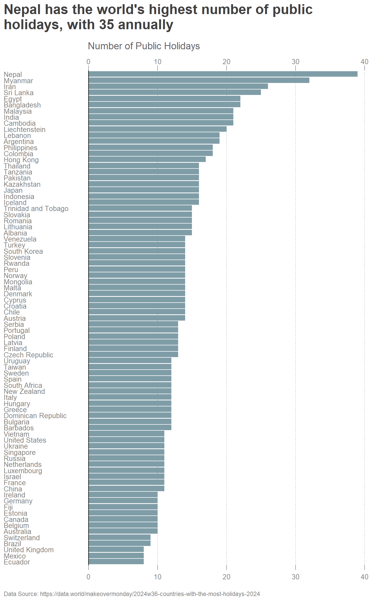

The data set, from MakeOver Monday (2024/w36), contains information on public holidays for various countries. It includes the following columns:
country: The name of the country.
CountriesWithTheMostHolidaysNumberOfPublicHolidays: The number of public holidays in 2024.
CountriesWithTheMostHolidaysAdditionalDetails: Additional details about the holidays for some countries, though most of this column is missing data.
My DataViz
The visualization is a bar chart. This makes it easy to compare the number of public holidays across different countries.
Show the code
library(tidyverse)source("theme_ts.R")raw_df<-read_csv("countries-with-the-most-holidays-2024.csv")raw_df|>mutate(Country =fct_reorder(country, CountriesWithTheMostHolidaysNumberOfPublicHolidays))|>ggplot(aes(x =CountriesWithTheMostHolidaysNumberOfPublicHolidays, y =Country))+geom_bar(stat ="identity", position ="dodge", width =0.9, fill ="#7F9DA7FF")+geom_vline(xintercept =0)+scale_x_continuous( name ="X Axis (Bottom)", sec.axis =sec_axis(~., name ="X Axis (Top)"))+labs( x ="", y ="", title =str_wrap("Nepal has the world's highest number of public holidays, with 35 annually", width =50), subtitle ="Number of Public Holidays", caption ="Data Source: https://data.world/makeovermonday/2024w36-countries-with-the-most-holidays-2024")+theme_ts()+theme(axis.text.y =element_text(size =10, hjust =0, lineheight =1.5, color ="#828282"), axis.text.x =element_text(size =10, color ="#828282"), panel.grid.major.y =element_blank(), panel.grid.major.x =element_line(color ="#7F9DA7FF", linetype ="dotted"), axis.ticks.x =element_line(linewidth =0.5, color ="#929497"), axis.ticks.length =unit(.25, "cm"), plot.subtitle =element_text(hjust =0.33, color ="#646369"), plot.title =element_text(color ="#414040"), plot.caption =element_text(hjust =0, color ="#828282"), plot.caption.position ="plot")

Insights from the Data
Wide Range of Public Holidays: The number of public holidays across different countries varies significantly, ranging from 8 to 39 days. The average number of public holidays is approximately 14.
Countries with the Most Holidays: Nepal has the highest number of public holidays at 39. Following Nepal, Myanmar has 32 holidays, while Iran and Sri Lanka have 26 and 25 holidays, respectively. These countries stand out significantly above the average.
Majority Below Average: Most countries (54 out of 81) have fewer holidays than the average of 14 days.
Tools
This visualization was made using R and packages tidyverse1 and ggplot22.
Footnotes
Wickham H, Averick M, Bryan J, Chang W, McGowan LD, François R, Grolemund G, Hayes A, Henry L, Hester J, Kuhn M, Pedersen TL, Miller E, Bache SM, Müller K, Ooms J, Robinson D, Seidel DP, Spinu V, Takahashi K, Vaughan D, Wilke C, Woo K, Yutani H (2019). “Welcome to the tidyverse.” _Journal of Open Source Software_, *4*(43), 1686. doi:10.21105/joss.01686 <https://doi.org/10.21105/joss.01686>.
---title: "Weekly DataViz 2024-09-04"description: "Countries with the Most Holidays 2024"author: "Cozmina Secula"date: "2024-09-4"code-link: truecode-tools: truecode-fold: truecode-summary: "Show the code"title-block-banner: true---<br>## *Countries with the Most Holidays 2024*The data set, from [MakeOver Monday](https://makeovermonday.co.uk/) (2024/w36), contains information on public holidays for various countries. It includes the following columns:- country: The name of the country.- CountriesWithTheMostHolidaysNumberOfPublicHolidays: The number of public holidays in 2024.- CountriesWithTheMostHolidaysAdditionalDetails: Additional details about the holidays for some countries, though most of this column is missing data.## My DataVizThe visualization is a bar chart. This makes it easy to compare the number of public holidays across different countries.```{r}#| label: DataViz#| warning: false#| message: false#| fig-height: 12#| fig-width: 7.5library(tidyverse)source("theme_ts.R")raw_df <-read_csv("countries-with-the-most-holidays-2024.csv")raw_df |>mutate(Country =fct_reorder(country, CountriesWithTheMostHolidaysNumberOfPublicHolidays)) |>ggplot(aes(x = CountriesWithTheMostHolidaysNumberOfPublicHolidays, y = Country)) +geom_bar(stat ="identity",position ="dodge",width =0.9,fill ="#7F9DA7FF") +geom_vline(xintercept =0) +scale_x_continuous( name ="X Axis (Bottom)",sec.axis =sec_axis(~., name ="X Axis (Top)") ) +labs(x ="",y ="",title =str_wrap("Nepal has the world's highest number of public holidays, with 35 annually",width =50),subtitle ="Number of Public Holidays",caption ="Data Source: https://data.world/makeovermonday/2024w36-countries-with-the-most-holidays-2024" ) +theme_ts() +theme(axis.text.y =element_text(size =10,hjust =0,lineheight =1.5,color ="#828282"),axis.text.x =element_text(size =10,color ="#828282"),panel.grid.major.y =element_blank(),panel.grid.major.x =element_line(color ="#7F9DA7FF",linetype ="dotted"),axis.ticks.x =element_line(linewidth =0.5, color ="#929497"),axis.ticks.length =unit(.25, "cm"),plot.subtitle =element_text(hjust =0.33, color ="#646369"),plot.title =element_text(color ="#414040"),plot.caption =element_text(hjust =0, color ="#828282"),plot.caption.position ="plot")```## Insights from the Data- **Wide Range of Public Holidays**: The number of public holidays across different countries varies significantly, ranging from 8 to 39 days. The average number of public holidays is approximately 14.- **Countries with the Most Holidays**: Nepal has the highest number of public holidays at 39. Following Nepal, Myanmar has 32 holidays, while Iran and Sri Lanka have 26 and 25 holidays, respectively. These countries stand out significantly above the average.- **Majority Below Average**: Most countries (54 out of 81) have fewer holidays than the average of 14 days.### ToolsThis visualization was made using R and packages tidyverse[^1] and ggplot2[^2].[^1]:``` Wickham H, Averick M, Bryan J, Chang W, McGowan LD, François R, Grolemund G, Hayes A, Henry L, Hester J, Kuhn M, Pedersen TL, Miller E, Bache SM, Müller K, Ooms J, Robinson D, Seidel DP, Spinu V, Takahashi K, Vaughan D, Wilke C, Woo K, Yutani H (2019). “Welcome to the tidyverse.” _Journal of Open Source Software_, *4*(43), 1686. doi:10.21105/joss.01686 <https://doi.org/10.21105/joss.01686>.```[^2]:``` H. Wickham. ggplot2: Elegant Graphics for Data Analysis. Springer-Verlag New York, 2016.```